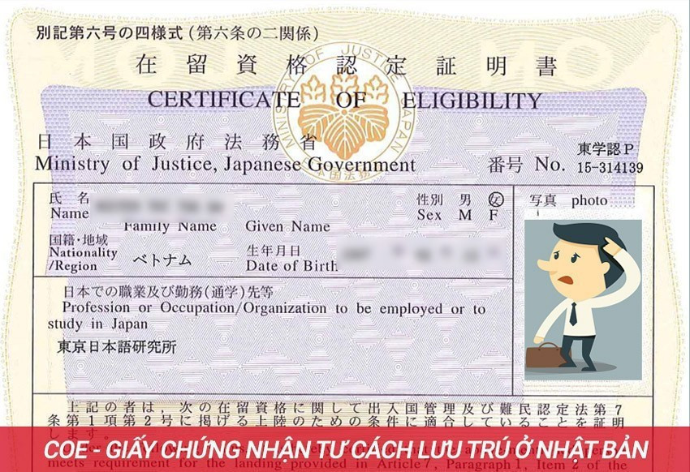

Vậy là bạn nhận được tư cách lưu trú và chuẩn bị sang Nhật du học? Thật là nhiều việc cần phải làm và một trong những việc đó là mang gì đi trong lần đầu sang Nhật.
Làm sao để việc xuất cảnh lần đầu thật thuận lợi, suôn sẻ.
Sau đây là một vài kinh nghiệm nho nhỏ được tổng hợp được xin chia sẻ với các bạn chuẩn bị hành trang sang Nhật nè.
Về vé máy bay FUJI khuyến khích các bạn nên đặt Vietnam Airline sẽ không bị delay quá nhiều và hành lý ký gửi cũng được bao gồm trong vé đó.
Hành lý mang theo thường gồm 2 loại: Hành lý ký gửi và Hành lý xách tay lên máy bay. Thông thường số cân sẽ như sau:
• Hành lý ký gửi: 20 kg ~ 46kg (tuỳ vé và hang máy bay)
• Hành lý xách tay: Túi xách hoặc balo không quá 12 kg
• Phải kiểm tra số ký mang theo khi mua vé
• Nếu bạn mang chất lỏng, dao kéo thì bạn phải để trong hành lý ký gửi và mang theo đúng quy định vì lý do an ninh. Đối với những vật dụng như dầu gội, kem đánh rang, nước hoa… nên bọc đầu chai lại kỹ càng để trách đổ ra hành lý.
• Nhớ cân ký hành lý trước khi ra sân bay.
• Vali nên có bánh xe có thể đẩy được
Đặc biệt chú ý: Nếu bạn mua vé có hành lý ký gửi là 40kg thì sẽ phải chia ra làm 2 kiện và mỗi kiện không được phép nặng quá 30kg. Không nên mang nhiều vali vì sẽ dễ thất lạc, không kiểm soát được hành lý.
Phải luôn mang theo và giữ cẩn thận bên mình

• Đây là giấy tờ quan trọng không được phép quên
• Những vẫn dụng này nên để trong một túi nhỏ bên mình mang theo ngoài hành lý xách tay và hành lý kí gửi
• Khi ký gửi hành lý và lấy Broading Pass (Vé lên máy bay) thì nhớ cầm theo giấy này
Những giấy tờ khác như CMND, học bạ, bằng TN, giấy khai sinh: không cần và không nên mang theo để trách thất lạc, nếu cần sau này có thể gửi bản scan qua.
Trong túi nên có:
• 1 cây viết mực đen để điền thông tin hoặc ghi chép
• 1 cuốn sổ nhỏ để ghi chép, trong sổ nên có những số điện thoại, địa chỉ của trường, số điện thoại người đón tại sân bay, một số điện thoại dùng cho trường hợp khẩn cấp.
• Nên đổi tiền Yên sẵn tại Việt Nam và đổi ra nhiều mệnh giá
• Để tiền vào bóp và nếu có thể nên chia tiền để ở nhiều nơi như trong ví, trong túi xách
• Ví nên có chỗ để tiền xu
• Nên mang theo 20 – 30 man (40 - 60 triệu) dành đủ cho 2 – 3 tháng đầu khi sang Nhật vì có thể những tháng đầu tiền chưa có biết cách sử dụng máy ATM, hay chưa có thẻ ngân hàng, chưa kiếm được việc làm thêm
Chụp ảnh lấy ngay bên Nhật khoảng 700 yên, giá không rẻ nên mang nhiều ảnh theo, đủ dùng trong những năm sang đây đi học (khoảng vài chục tấm), gồm có:
• Ảnh3x4
• Ảnh 4x6
• Nên chọn ảnh rõ nét, mặc áo sơ mi trắng, tóc tai gọn gàng để có thể sử dụng khi đi xin việc
• Nên lưu ảnh thẻ vào USB hoặc trên google drive để sau này qua Nhật in cho tiện
• Mang theo quần áo đủ sử dụng trong vài tuần đầu tiên khi chưa biết chỗ mua đồ. Vì quần áo bên Nhật cũng tương đối rẻ và bền lại hợp thời tiết nên có thể sang đó mua thêm
• Nên mang đủ dùng những quần áo mỏng, đồ mặc ở nhà, đồ lót . . .
• Mang theo 1 áo ấm, áo khoác mỏng nhẹ. Quần áo rét thì có thể mua tại Nhật với giá cũng hợp lý và không phải xách theo nặng hành lý
• Áo sơ mi trắng, quần tây, áo vest (không bắt buộc), váy công sở hoặc áo dài: mang theo để mặc khi tham gia lễ nhập học
• Vớ: vì thời tiết bên Nhật cũng khá lạnh nên mang theo vớ để đc giữ ấm
• Giày: Có thể mang 1 đôi cao gót, giày tây và 1 đôi giày thể thao cho thời gian đầu
• Kem đánh răng, dầu gội đầu, dầu tắm…: mang theo tuýp nhỏ, đủ dùng, và gói cẩn thận
• Khăn mặt và khăn tắm: mang theo đủ dùng
• Đồ cá nhân đặc biệt (đối với các bạn nữ): nên mang theo đủ dùng trong 2 – 3 tuần làm quen với cuộc sống
• Đồ dùng khác như móc áo, gương, xà bông giặt đồ…: ở các tiệm 100 yên hoặc combini của Nhật có đầy đủ và giá rẻ.
• Mang theo 1 số loại thuốc thông thường như: nhức đầu, cảm sốt, đau bụng, sổ mũi, vitamin C… hoặc những loại thuốc cho bệnh riêng
• Mang theo băng keo cá nhân, bông băng
• Vì sẽ học theo giáo trình của trường nên không cần mang theo quá nhiều sách vở, chỉ cần mang theo tập đã ghi chép, một số sách thường dùng, 1 quyển tập hoặc sổ ghi chép
• Tập viết, bút thì có thể mua ở cửa hàng 100 yên hoặc combini vừa rẻ vừa nhiều loại
Nên mang từ điển giấy, còn kim từ điển thì nên mua ở Nhật. Trong trường hợp nếu bắt buộc thì có thể mua tại Việt Nam
Có thể làm ở Việt Nam hoặc sang Nhật làm
• Vì điện ở Nhật là 110V và ổ cắm dẹp nên phải mua ổ cắm đổ điện để sử dụng. Trong combini cũng có bán
• Mang theo laptop
• Ruốc, gia vị nấu ăn, nước tương, tương ớt,... (mang vừa đủ sử dụng trong thời gian đầu, có thể mua tại những cửa hàng bán đồ Việt Nam)
• Mì gói (mang ít phòng TH không quen ăn đồ ăn Nhật)
• Không nên mang nhiều vì dễ bị kiểm tra hành lý
Đây là những điều đúc kết từ kinh nghiệm hỗ trợ du học sinh của Fuji. Nếu bạn thắc mắc về du học hoặc khóa học tiếng Nhật liên hệ ngay Fuji để được giải đáp nhé